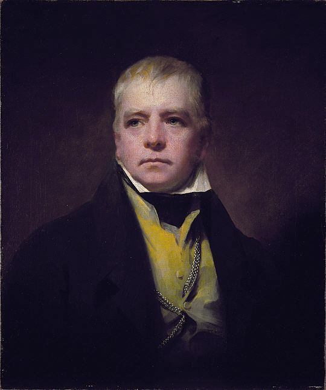

Walter Scott
Menneisyys elää ihmisten ristiriitaisissa valinnoissa.
Scottin historiallisissa romaaneissa suuret muutokset tulevat näkyviksi kohtaamisina eri yhteisöjen ja elämäntapojen välillä.
Etsi teokset kirjastostaElämä ja teokset
Walter Scott syntyi Edinburghissa ja kouluttautui lakimieheksi. Hän keräsi balladeja ja saavutti ensin mainetta runoilijana. Vuonna 1814 ilmestynyt Waverley aloitti hänen historiallisen romaanituotantonsa.
Ivanhoe ilmestyi vuoden 1819 lopulla; ensipainoksen nimiölehdellä on vuosiluku 1820. Skotlannin historiaa usein kuvannut Scott siirsi siinä tapahtumat keskiaikaiseen Englantiin ja saksien ja normannien välisiin jännitteisiin.
Tyyli ja teemat
Scott rinnastaa sankarilliset ihanteet yhteiskunnan todellisiin hierarkioihin. Turnajaiset ja vaaralliset matkat kuljettavat juonta, mutta samalla kysytään, kuka saa kuulua yhteisöön. Menneisyyden kuva on romaanin tulkinta, jossa seikkailu ja historiallinen kiinnostus kietoutuvat toisiinsa.
Historia · Kunnia · Yhteisö
Aloita tästä
Ivanhoe
Ritarien, hallitsijoiden ja syrjittyjen kohtaamiset rakentavat monisäikeisen seikkailun. Huomaa erityisesti Rebeccan asema ja toimintamahdollisuudet.
Vertaa henkilöiden puheita kunniasta siihen, miten he kohtelevat valtaa vailla olevia ihmisiä.